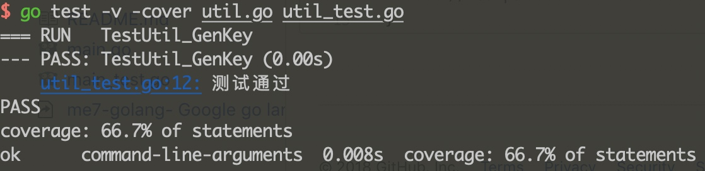

一、简单单测
简单的方法 util.go
package lib
import (
"errors"
)
type Util struct {}
func (u Util)GenKey(day string) (string, error) {
if day == "" {
return "", errors.New("key不能为空")
}
return "key_" + day, nil
}
编写单测 util_test.go，单测文件名 *_test.go
package lib
import (
"testing"
)
func TestUtil_GenKey(t *testing.T) {
test := "test"
if key, err:= Util.GenKey(Util{}, test); key != "key_test" || err != nil {
t.Error("测试不通过")
} else {
t.Log("测试通过")
}
}
执行命令
go test -v -cover util.go util_test.go
解析：-v 结果可视化，-cover 显示覆盖率

二、利用gotests实现自动化
简单的方法 helper.go
package lib
import (
"errors"
)
type AutoUtil struct {}
func (u AutoUtil)AutoGenKey(day string) (string, error) {
if day == "" {
return "", errors.New("key不能为空")
}
return "key_" + day, nil
}
执行gotests命令行，将自动生成单测文件
gotests -all helper.go > helper_test.go
看下helper_test.go，声明tests为测试用例集，会使用for range循环执行用例
//Generated TestAutoUtil_AutoGenKey
package lib
import "testing"
func TestAutoUtil_AutoGenKey(t *testing.T) {
type args struct {
day string
}
tests := []struct {
name string
u AutoUtil
args args
want string
wantErr bool
}{
// TODO: Add test cases.
}
for _, tt := range tests {
t.Run(tt.name, func(t *testing.T) {
u := AutoUtil{}
got, err := u.AutoGenKey(tt.args.day)
if (err != nil) != tt.wantErr {
t.Errorf("AutoUtil.AutoGenKey() error = %v, wantErr %v", err, tt.wantErr)
return
}
if got != tt.want {
t.Errorf("AutoUtil.AutoGenKey() = %v, want %v", got, tt.want)
}
})
}
}
编写用例
// TODO: Add test cases.
{"测试正常key", AutoUtil{}, args{"20181115"}, "key_20181115", false},
{"测试空字符key", AutoUtil{}, args{""}, "", true},
执行测试

Tips. 直接执行当前包的所有文件

问题记录
今天写单测遇到一个问题，功能函数遇到错误是，返回
function test(s string) (ret map[int]string, err error){
...
// 遇到异常抛出错误
return nil, errors.new("错误信息")
}
用gotest生成单元测试
tests := []struct {
name string
args args
wantRet map[int]string
wantErr bool
}{
{"非法情况",args{""}, map[int]string{}, false},
}
这回直接去go tests，返回情况很意外，你会看到世界返回的map[]，我想要的也就是map[]，但是他却告诉我失败的FAIL

纳闷了很久，看到输出的错误信息，将里面的%v改成%#v，看看更多的输出信息

结果输出的结果是这样的

这回只要将你的测试用例改成这样就行了
{"非法情况",args{""}, map[int]string{}, false}